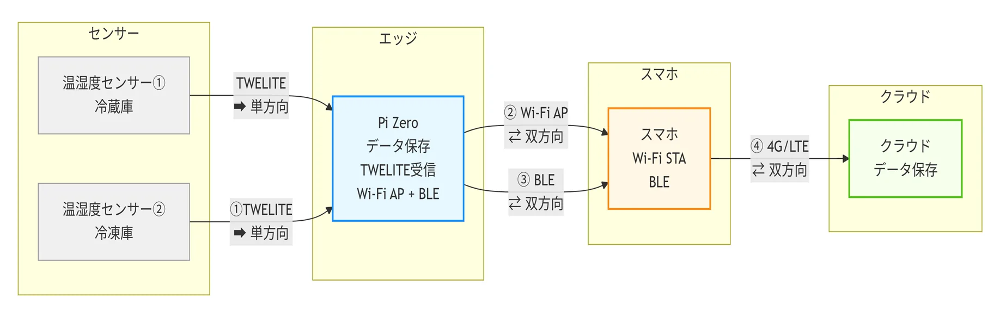
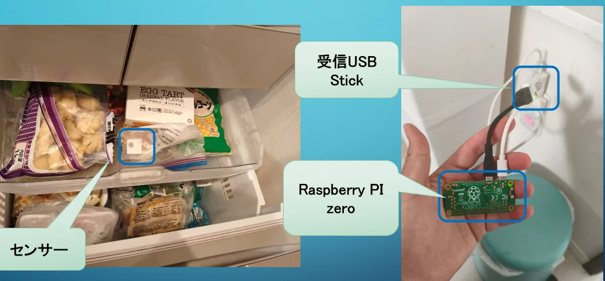
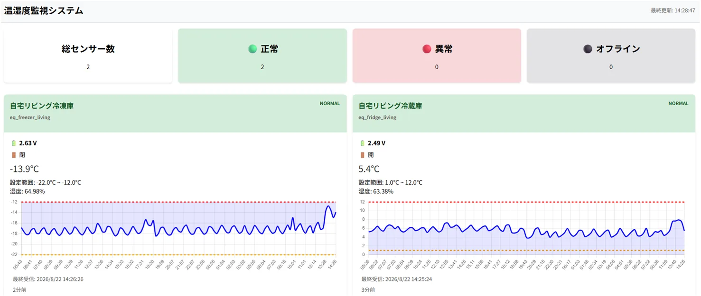

低い利益率
高価で複雑なIoTではなく、現場が導入しやすい低コストな仕組みが求められます。
高価で複雑なIoTではなく、現場が導入しやすい低コストな仕組みが求められます。
温度確認や記録など、継続的に発生する現場作業の負担を減らす必要があります。
既存設備を大きく改造せず、複雑なネットワーク構築を前提としない、現場で扱いやすい仕組みが必要です。
Raspberry Pi ZeroとTWELITEセンサーで自動データ収集。データをエッジ側に保存し、必要なときだけスマートフォン経由でクラウドへ同期します。
冷蔵庫・冷凍庫などの既存設備を大きく改造せず、センサーを設置して利用できる構成を目指します。
継続的な温度モニタリングで、設備劣化などによる緩やかな温度上昇を把握し、異常検知につなげます。蓄積したデータを活用し、衛生管理に必要な記録・帳票作成の自動化を検証します。
センサーからRaspberry Pi Zeroへデータを集約し、エッジ側で保存。Raspberry Pi ZeroとスマートフォンはWi-Fi AP / BLEで接続し、必要な場合のみスマートフォンから4G/LTE経由でクラウドへ同期します。

Raspberry Pi Zeroをエッジデバイスとして使用し、TWELITEセンサーから温度データを収集・保存します。

冷凍庫内のセンサーとRaspberry Pi Zero
収集したデータをWeb画面で可視化し、センサー数、正常・異常・オフライン状態、現在温度、設定範囲、温度推移、最終受信時刻などを確認できます。

実装の様子を、ハードウェア編・ソフトウェア編の2本の動画で紹介しています。
ハードウェア編
ソフトウェア編